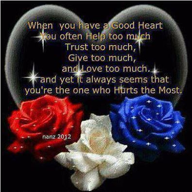

My name is Marya (pronounced Mar 'ya), and sounds similar to "How are 'ya?".
I am 57 (fifty-seven) years wise, as my tribe (Citizens Potawatomi Nation), would say. I earned both an Associates of Art degree and an Associates of Science degree at Lane Community College. I have now tranfered to the University of Oregon, am in my second term, my major is in Buiness Accounting with a minor in Computer Information Technology
My career has been in Business Management, Accounting, Finance, and Banking for nearly forty years. Now, I finally have the opportunity to earn my degree! My dream is to take, and pass, the Board of Accountancy exam in order to become a Certified Public Accountant.
A friend on Facebook shared this picture. What caught my attention was the black background, the heart, and the roses because these are among some of my favorite things. When I read the words, I was moved. Therefore, I also shared the photo on my Facebook page and am now sharing it here.
